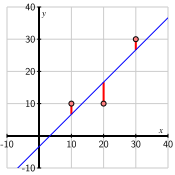

Suppose we collect some data when performing an experiment and plot it as shown on the left of Figure 6.5.1. Notice that there is no line on which all the points lie; in fact, it would be surprising if there were since we can expect some uncertainty in the measurements recorded. There does, however, appear to be a line, as shown on the right, on which the points almost lie.
Figure6.5.1.A collection of points and a line approximating the linear relationship implied by them.
In this section, we’ll explore how the techniques developed in this chapter enable us to find the line that best approximates the data. More specifically, we’ll see how the search for a line passing through the data points leads to an inconsistent system \(A\xvec=\bvec\text{.}\) Since we are unable to find a solution, we instead seek the vector \(\xvec\) where \(A\xvec\) is as close as possible to \(\bvec\text{.}\) Orthogonal projection gives us just the right tool for doing this.
Preview Activity6.5.1.
Is there a solution to the equation \(A\xvec=\bvec\) where \(A\) and \(\bvec\) are such that
We know that \(\threevec12{-1}\) and \(\threevec250\) form a basis for \(\col(A)\text{.}\) Find an orthogonal basis for \(\col(A)\text{.}\)
Find the orthogonal projection \(\widehat\bvec\) of \(\bvec\) onto \(\col(A)\text{.}\)
Explain why the equation \(A\xvec=\widehat\bvec\) must be consistent and then find its solution.
Subsection6.5.1A first example
When we’ve encountered inconsistent systems in the past, we’ve simply said there is no solution and moved on. The preview activity, however, shows how we can find approximate solutions to an inconsistent system: if there are no solutions to \(A\xvec = \bvec\text{,}\) we instead solve the consistent system \(A\xvec = \bhat\text{,}\) the orthogonal projection of \(\bvec\) onto \(\col(A)\text{.}\) As we’ll see, this solution is, in a specific sense, the best possible.
Activity6.5.2.
Suppose we have three data points \((1,1)\text{,}\)\((2,1)\text{,}\) and \((3,3)\) and that we would like to find a line passing through them.
Plot these three points in Figure 6.5.2. Are you able to draw a line that passes through all three points?
Figure6.5.2.Plot the three data points here.
Remember that the equation of a line can be written as \(b + mx=y\) where \(m\) is the slope and \(b\) is the \(y\)-intercept. We will try to find \(b\) and \(m\) so that the three points lie on the line.
The first data point \((1,1)\) gives an equation for \(b\) and \(m\text{.}\) In particular, we know that when \(x=1\text{,}\) then \(y=1\) so we have \(b + m(1) = 1\) or \(b + m = 1\text{.}\) Use the other two data points to create a linear system describing \(m\) and \(b\text{.}\)
We have obtained a linear system having three equations, one from each data point, for the two unknowns \(b\) and \(m\text{.}\) Identify a matrix \(A\) and vector \(\bvec\) so that the system has the form \(A\xvec=\bvec\text{,}\) where \(\xvec=\ctwovec bm\text{.}\)
Notice that the unknown vector \(\xvec=\ctwovec bm\) describes the line that we seek.
Is there a solution to this linear system? How does this question relate to your attempt to draw a line through the three points above?
Since this system is inconsistent, we know that \(\bvec\) is not in the column space \(\col(A)\text{.}\) Find an orthogonal basis for \(\col(A)\) and use it to find the orthogonal projection \(\widehat\bvec\) of \(\bvec\) onto \(\col(A)\text{.}\)
Since \(\widehat\bvec\) is in \(\col(A)\text{,}\) the equation \(A\xvec = \widehat\bvec\) is consistent. Find its solution \(\xvec = \ctwovec{b}{m}\) and sketch the line \(y=b + mx\) in Figure 6.5.2. We say that this is the line of best fit.
This activity illustrates the idea behind a technique known as orthogonal least squares, which we have been working toward throughout this chapter. If the data points are denoted as \((x_i, y_i)\text{,}\) we construct the matrix \(A\) and vector \(\bvec\) as
With the vector \(\xvec=\ctwovec bm\) representing the line \(b+mx = y\text{,}\) we see that the equation \(A\xvec=\bvec\) describes a line passing through all the data points. In our activity, it is visually apparent that there is no such line, which agrees with the fact that the equation \(A\xvec=\bvec\) is inconsistent.
Remember that \(\bhat\text{,}\) the orthogonal projection of \(\bvec\) onto \(\col(A)\text{,}\) is the closest vector in \(\col(A)\) to \(\bvec\text{.}\) Therefore, when we solve the equation \(A\xvec=\bhat\text{,}\) we are finding the vector \(\xvec\) so that \(A\xvec =
\threevec{b+mx_1}{b+mx_2}{b+mx_3}\) is as close to \(\bvec=\threevec{y_1}{y_2}{y_3}\) as possible. Let’s think about what this means within the context of this problem.
The difference \(\bvec-A\xvec =
\threevec{y_1-(b+mx_1)}{y_2-(b+mx_2)}{y_3-(b+mx_3)}\) so that the square of the distance between \(A\xvec\) and \(\bvec\) is
Our approach finds the values for \(b\) and \(m\) that make this sum of squares as small as possible, which is why we call this a least-squares problem.
Drawing the line defined by the vector \(\xvec=\ctwovec bm\text{,}\) the quantity \(y_i - (b + mx_i)\) reflects the vertical distance between the line and the data point \((x_i, y_i)\text{,}\) as shown in Figure 6.5.5. Seen in this way, the square of the distance \(\len{\bvec-A\xvec}^2\) is a measure of how much the line defined by the vector \(\xvec\) misses the data points. The solution to the least-squares problem is the line that misses the data points by the smallest amount possible.
Figure6.5.5.The solution of the least-squares problem and the vertical distances between the line and the data points.
Subsection6.5.2Solving least-squares problems
Now that we’ve seen an example of what we’re trying to accomplish, let’s put this technique into a more general framework.
Given an inconsistent system \(A\xvec = \bvec\text{,}\) we seek the vector \(\xvec\) that minimizes the distance from \(A\xvec\) to \(\bvec\text{.}\) In other words, \(\xvec\) satisfies \(A\xvec = \widehat\bvec\text{,}\) where \(\bhat\) is the orthogonal projection of \(\bvec\) onto the column space \(\col(A)\text{.}\) We know the equation \(A\xvec=\bhat\) is consistent since \(\bhat\) is in \(\col(A)\text{,}\) and we know there is only one solution if we assume that the columns of \(A\) are linearly independent.
We will usually denote the solution of \(A\xvec = \bhat\) by \(\xhat\) and call this vector the least-squares approximate solution of \(A\xvec=\bvec\) to distinguish it from a (possibly non-existent) solution of \(A\xvec=\bvec\text{.}\)
There is an alternative method for finding \(\xhat\) that does not involve first finding the orthogonal projection \(\bhat\text{.}\) Remember that \(\bhat\) is defined by the fact that \(\widehat\bvec - \bvec\) is orthogonal to \(\col(A)\text{.}\) In other words, \(\bhat-\bvec\) is in the orthogonal complement \(\col(A)^\perp\text{,}\) which Proposition 6.2.10 tells us is the same as \(\nul(A^T)\text{.}\) Since \(\bhat-\bvec\) is in \(\nul(A^T)\text{,}\) it follows that
This equation is called the normal equation, and we have the following proposition.
Proposition6.5.6.
If the columns of \(A\) are linearly independent, then there is a unique least-squares approximate solution \(\xhat\) to the equation \(A\xvec=\bvec\) given by the normal equation
with matrix \(A\) and vector \(\bvec\text{.}\) Since this equation is inconsistent, we will find the least-squares approximate solution \(\xhat\) by solving the normal equation \(A^TA\xhat = A^T\bvec\text{,}\) which has the form
The rate at which a cricket chirps is related to the outdoor temperature, as reflected in some experimental data that we’ll study in this activity. The chirp rate \(C\) is expressed in chirps per second while the temperature \(T\) is in degrees Fahrenheit. Evaluate the following cell to load the data: Evaluating this cell also provides:
the vectors chirps and temps formed from the columns of the dataset.
the command onesvec(n), which creates an \(n\)-dimensional vector whose entries are all one.
Remember that you can form a matrix whose columns are the vectors v1 and v2 with matrix([v1, v2]).T.
We would like to represent this relationship by a linear function
\begin{equation*}
\beta_0 + \beta_1 C = T\text{.}
\end{equation*}
Use the first data point \((C_1,T_1)=(20.0,88.6)\) to write an equation involving \(\beta_0\) and \(\beta_1\text{.}\)
Suppose that we represent the unknowns using a vector \(\xvec = \twovec{\beta_0}{\beta_1}\text{.}\) Use the 15 data points to create the matrix \(A\) and vector \(\bvec\) so that the linear system \(A\xvec= \bvec\) describes the unknown vector \(\xvec\text{.}\)
Write the normal equations \(A^TA\xhat =
A^T\bvec\text{;}\) that is, find the matrix \(A^TA\) and the vector \(A^T\bvec\text{.}\)
Solve the normal equations to find \(\xhat\text{,}\) the least-squares approximate solution to the equation \(A\xvec=\bvec\text{.}\) Call your solution xhat since x has another meaning in Sage.
What are the values of \(\beta_0\) and \(\beta_1\) that you found?
If the chirp rate is 22 chirps per second, what is your prediction for the temperature?
You can plot the data and your line, assuming you called the solution xhat, using the cell below.
This example demonstrates an approach, called linear regression, in which a collection of data is modeled using a linear function found by solving a least-squares problem. Once we have the linear function that best fits the data, we can make predictions about situations that we haven’t encountered in the data.
If we’re going to use our function to make predictions, it’s natural to ask how much confidence we have in these predictions. This is a statistical question that leads to a rich and well-developed theory 1
For example, see Gareth James, Daniela Witten, Trevor Hastie, Robert Tibshirani. An Introduction to Statistical Learning: with Applications in R. Springer, 2013.
, which we won’t explore in much detail here. However, there is one simple measure of how well our linear function fits the data that is known as the coefficient of determination and denoted by \(R^2\text{.}\)
We have seen that the square of the distance \(\len{\bvec-A\xvec}^2\) measures the amount by which the line fails to pass through the data points. When the line is close to the data points, we expect this number to be small. However, the size of this measure depends on the scale of the data. For instance, the two lines shown in Figure 6.5.8 seem to fit the data equally well, but \(|\bvec-A\xhat|^2\) is 100 times larger on the right.

Figure6.5.8.The lines appear to fit equally well in spite of the fact that \(\len{\bvec-A\xhat}^2\) differs by a factor of 100.
The coefficient of determination \(R^2\) is defined by normalizing \(|\bvec-A\xhat|^2\) so that it is independent of the scale. Recall that we described how to demean a vector in Section 6.1: given a vector \(\vvec\text{,}\) we obtain \(\widetilde{\vvec}\) by subtracting the average of the components from each component.
where \(\widetilde{\bvec}\) is the vector obtained by demeaning \(\bvec\text{.}\)
A more complete explanation of this definition relies on the concept of variance, which we explore in Exercise 6.5.6.12 and the next chapter. For the time being, it’s enough to know that \(0\leq R^2 \leq 1\) and that the closer \(R^2\) is to 1, the better the line fits the data. In our original example, illustrated in Figure 6.5.8, we find that \(R^2 = 0.75\text{,}\) and in our study of cricket chirp rates, we have \(R^2=0.69\text{.}\) However, assessing the confidence we have in predictions made by solving a least-squares problem can require considerable thought, and it would be naive to rely only on the value of \(R^2\text{.}\)
Subsection6.5.3Using \(QR\) factorizations
As we’ve seen, the least-squares approximate solution \(\xhat\) to \(A\xvec=\bvec\) may be found by solving the normal equation \(A^TA\xhat = A^T\bvec\text{,}\) and this can be a practical strategy for some problems. However, this approach can be problematic as small rounding errors can accumulate and lead to inaccurate final results.
As the next activity demonstrates, there is an alternate method for finding the least-squares approximate solution \(\xhat\) using a \(QR\) factorization of the matrix \(A\text{,}\) and this method is preferable as it is numerically more reliable.
Activity6.5.4.
Suppose we are interested in finding the least-squares approximate solution to the equation \(A\xvec =
\bvec\) and that we have the \(QR\) factorization \(A=QR\text{.}\) Explain why the least-squares approximate solution is given by solving
Since \(R\) is upper triangular, this is a relatively simple equation to solve using back substitution, as we saw in Section 5.1. We will therefore write the least-squares approximate solution as
where \(\rho\) denotes a person’s body density in grams per cubic centimeter. Obtaining an accurate measure of \(\rho\) is difficult, however, because it requires submerging the person in water and measuring the volume of water displaced. Instead, we will gather several other body measurements, which are more easily obtained, and use it to predict \(BFI\text{.}\)
For instance, suppose we take 10 patients and measure their weight \(w\) in pounds, height \(h\) in inches, abdomen \(a\) in centimeters, wrist circumference \(r\) in centimeters, neck circumference \(n\) in centimeters, and \(BFI\text{.}\) Evaluating the following cell loads and displays the data. In addition, that cell provides:
vectors weight, height, abdomen, wrist, neck, and BFI formed from the columns of the dataset.
the command onesvec(n), which returns an \(n\)-dimensional vector whose entries are all one.
the command QR(A) that returns the \(QR\) factorization of \(A\) as Q, R = QR(A).
the command demean(v), which returns the demeaned vector \(\widetilde{\vvec}\text{.}\)
Use the first data point to write an equation for the parameters \(\beta_0,\beta_1,\ldots,\beta_5\text{.}\)
Describe the linear system \(A\xvec = \bvec\) for these parameters. More specifically, describe how the matrix \(A\) and the vector \(\bvec\) are formed.
Construct the matrix \(A\) and find its \(QR\) factorization in the cell below.
Find the least-squares approximate solution \(\xhat\) by solving the equation \(R\xhat =
Q^T\bvec\text{.}\) You may want to use N(xhat) to display a decimal approximation of the vector. What are the parameters \(\beta_0,\beta_1,\ldots,\beta_5\) that best fit the data?
Find the coefficient of determination \(R^2\) for your parameters. What does this imply about the quality of the fit?
Suppose a person’s measurements are: weight 190, height 70, abdomen 90, wrist 18, and neck 35. Estimate this person’s \(BFI\text{.}\)
To summarize, we have seen that
Proposition6.5.10.
If the columns of \(A\) are linearly independent and we have the \(QR\) factorization \(A=QR\text{,}\) then the least-squares approximate solution \(\xhat\) to the equation \(A\xvec=\bvec\) is given by
In the examples we’ve seen so far, we have fit a linear function to a dataset. Sometimes, however, a polynomial, such as a quadratic function, may be more appropriate. It turns out that the techniques we’ve developed in this section are still useful as the next activity demonstrates.
Activity6.5.5.
Suppose that we have a small dataset containing the points \((0,2)\text{,}\)\((1,1)\text{,}\)\((2,3)\text{,}\) and \((3,3)\text{,}\) such as appear when the following cell is evaluated. In addition to loading and plotting the data, evaluating that cell provides the following commands:
Q, R = QR(A) returns the \(QR\) factorization of \(A\text{.}\)
demean(v) returns the demeaned vector \(\widetilde{\vvec}\text{.}\)
Let’s fit a quadratic function of the form
\begin{equation*}
\beta_0 + \beta_1 x + \beta_2 x^2 = y
\end{equation*}
to this dataset.
Write four equations, one for each data point, that describe the coefficients \(\beta_0\text{,}\)\(\beta_1\text{,}\) and \(\beta_2\text{.}\)
Express these four equations as a linear system \(A\xvec = \bvec\) where \(\xvec =
\threevec{\beta_0}{\beta_1}{\beta_2}\text{.}\)
Find the \(QR\) factorization of \(A\) and use it to find the least-squares approximate solution \(\xhat\text{.}\)
Use the parameters \(\beta_0\text{,}\)\(\beta_1\text{,}\) and \(\beta_2\) that you found to write the quadratic function that fits the data. You can plot this function, along with the data, by entering your function in the place indicated below.
What is your predicted \(y\) value when \(x=1.5\text{?}\)
Find the coefficient of determination \(R^2\) for the quadratic function. What does this say about the quality of the fit?
Find the coefficient of determination \(R^2\) for the cubic function. What does this say about the quality of the fit?
What do you notice when you plot the cubic function along with the data? How does this reflect the value of \(R^2\) that you found?
The matrices \(A\) that you created in the last activity when fitting a quadratic and cubic function to a dataset have a special form. In particular, if the data points are labeled \((x_i, y_i)\) and we seek a degree \(k\) polynomial, then
This is called a Vandermonde matrix of degree \(k\text{.}\)
Activity6.5.6.
This activity explores a dataset describing Arctic sea ice and that comes from Sustainability Math. 2
sustainabilitymath.org
Evaluating the cell below will plot the extent of Arctic sea ice, in millions of square kilometers, during the twelve months of 2012. In addition, you have access to a few special variables and commands:
month is the vector of month values and ice is the vector of sea ice values from the table above.
vandermonde(x, k) constructs the Vandermonde matrix of degree \(k\) using the points in the vector x.
Q, R = QR(A) provides the \(QR\) factorization of \(A\text{.}\)
demean(v) returns the demeaned vector \(\widetilde{\vvec}\text{.}\)
Find the vector \(\xhat\text{,}\) the least-squares approximate solution to the linear system that results from fitting a degree 5 polynomial to the data.
If your result is stored in the variable xhat, you may plot the polynomial and the data together using the following cell.
Find the coefficient of determination \(R^2\) for this polynomial fit.
Repeat these steps to fit a degree 8 polynomial to the data, plot the polynomial with the data, and find \(R^2\text{.}\)
Repeat one more time by fitting a degree 11 polynomial to the data, creating a plot, and finding \(R^2\text{.}\)
It’s certainly true that higher degree polynomials fit the data better, as seen by the increasing values of \(R^2\text{,}\) but that’s not always a good thing. For instance, when \(k=11\text{,}\) you may notice that the graph of the polynomial wiggles a little more than we would expect. In this case, the polynomial is trying too hard to fit the data, which usually contains some uncertainty, especially if it’s obtained from measurements. The error built in to the data is called noise, and its presence means that we shouldn’t expect our polynomial to fit the data perfectly. When we choose a polynomial whose degree is too high, we give the noise too much weight in the model, which leads to some undesirable behavior, like the wiggles in the graph.
Fitting the data with a polynomial whose degree is too high is called overfitting, a phenomenon that can appear in many machine learning applications. Generally speaking, we would like to choose \(k\) large enough to capture the essential features of the data but not so large that we overfit and build the noise into the model. There are ways to determine the optimal value of \(k\text{,}\) but we won’t pursue that here.
Choosing a reasonable value of \(k\text{,}\) estimate the extent of Arctic sea ice at month 6.5, roughly at the Summer Solstice.
Subsection6.5.5Summary
This section introduced some types of least-squares problems and a framework for working with them.
Given an inconsistent system \(A\xvec=\bvec\text{,}\) we find \(\xhat\text{,}\) the least-squares approximate solution, by requiring that \(A\xhat\) be as close to \(\bvec\) as possible. In other words, \(A\xhat = \bhat\) where \(\bhat\) is the orthogonal projection of \(\bvec\) onto \(\col(A)\text{.}\)
One way to find \(\xhat\) is by solving the normal equations \(A^TA\xhat = A^T\bvec.\) This is not our preferred method since numerical problems can arise.
A second way to find \(\xhat\) uses a \(QR\) factorization of \(A\text{.}\) If \(A=QR\text{,}\) then \(\xhat
= R^{-1}Q^T\bvec\) and finding \(R^{-1}\) is computationally feasible since \(R\) is upper triangular.
This technique may be applied widely and is useful for modeling data. We saw examples in this section where linear functions of several input variables and polynomials provided effective models for different datasets.
A simple measure of the quality of the fit is the coefficient of determination \(R^2\) though some additional thought should be given in real applications.
Exercises6.5.6Exercises
Evaluating the following cell loads in some commands that will be helpful in the following exercises. In particular, there are commands:
QR(A) that returns the \(QR\) factorization of A as Q, R = QR(A),
onesvec(n) that returns the \(n\)-dimensional vector whose entries are all 1,
demean(v) that demeans the vector v,
vandermonde(x, k) that returns the Vandermonde matrix of degree \(k\) formed from the components of the vector x, and
plot_model(xhat, data) that plots the data and the model xhat.
Set up a linear system \(A\xvec = \bvec\) that describes a quadratic function
\begin{equation*}
\beta_0+\beta_1x+\beta_2x^2 = y
\end{equation*}
passing through the points.
Use a \(QR\) factorization to find the least-squares approximate solution \(\xhat\) and plot the data and the graph of the resulting quadratic function.
What is your predicted \(y\)-value when \(x=3.5\text{?}\)
Find the coefficient of determination \(R^2\text{.}\)
Find the least-squares approximate solution \(\xhat\text{.}\)
What is your predicted \(y\)-value when \(x_1 =
2.4\) and \(x_2=2.9\text{?}\)
Find the coefficient of determination \(R^2\text{.}\)
5.
Determine whether the following statements are true or false and explain your thinking.
If \(A\xvec=\bvec\) is consistent, then \(\xhat\) is a solution to \(A\xvec=\bvec\text{.}\)
If \(R^2=1\text{,}\) then the least-squares approximate solution \(\xhat\) is also a solution to the original equation \(A\xvec=\bvec\text{.}\)
Given the \(QR\) factorization \(A=QR\text{,}\) we have \(A\xhat=Q^TQ\bvec\text{.}\)
A \(QR\) factorization provides a method for finding the least-squares approximate solution to \(A\xvec=\bvec\) that is more reliable than solving the normal equations.
A solution to \(AA^T\xvec = A\bvec\) is the least-squares approximate solution to \(A\xvec = \bvec\text{.}\)
6.
Explain your response to the following questions.
If \(\xhat=\zerovec\text{,}\) what does this say about the vector \(\bvec\text{?}\)
If the columns of \(A\) are orthonormal, how can you easily find the least-squares approximate solution to \(A\xvec=\bvec\text{?}\)
7.
The following cell loads in some data showing the number of people in Bangladesh living without electricity over 27 years. It also defines vectors year, which records the years in the dataset, and people, which records the number of people.
Suppose we want to write
\begin{equation*}
N = \beta_0 + \beta_1 t
\end{equation*}
where \(t\) is the year and \(N\) is the number of people. Construct the matrix \(A\) and vector \(\bvec\) so that the linear system \(A\xvec=\bvec\) describes the vector \(\xvec=\twovec{\beta_0}{\beta_1}\text{.}\)
Using a \(QR\) factorization of \(A\text{,}\) find the values of \(\beta_0\) and \(\beta_1\) in the least-squares approximate solution \(\xhat\text{.}\)
What is the coefficient of determination \(R^2\) and what does this tell us about the quality of the approximation?
What is your prediction for the number of people living without electricity in 1985?
Estimate the year in which there will be no people living without electricity.
8.
This problem concerns a dataset describing planets in our Solar system. For each planet, we have the length \(L\) of the semi-major axis, essentially the distance from the planet to the Sun in AU (astronomical units), and the period \(P\text{,}\) the length of time in years required to complete one orbit around the Sun.
We would like to model this data using the function \(P = CL^r\) where \(C\) and \(r\) are parameters we need to determine. Since this isn’t a linear function, we will transform this relationship by taking the natural logarithm of both sides to obtain
Evaluating the following cell loads the dataset and defines two vectors logaxis, whose components are \(\ln(L)\text{,}\) and logperiod, whose components are \(\ln(P)\text{.}\)
Construct the matrix \(A\) and vector \(\bvec\) so that the solution to \(A\xvec=\bvec\) is the vector \(\xvec=\ctwovec{\ln(C)}r\text{.}\)
Find the least-squares approximate solution \(\xhat\text{.}\) What does this give for the values of \(C\) and \(r\text{?}\)
Find the coefficient of determination \(R^2\text{.}\) What does this tell us about the quality of the approximation?
Suppose that the orbit of an asteroid has a semi-major axis whose length is \(L=4.0\) AU. Estimate the period \(P\) of the asteroid’s orbit.
Halley’s Comet has a period of \(P=75\) years. Estimate the length of its semi-major axis.
9.
Evaluating the following cell loads a dataset describing the temperature in the Earth’s atmosphere at various altitudes. There are also two vectors altitude, expressed in kilometers, and temperature, in degrees Celsius.
Describe how to form the matrix \(A\) and vector \(\bvec\) so that the linear system \(A\xvec=\bvec\) describes a degree \(k\) polynomial fitting the data.
After choosing a value of \(k\text{,}\) construct the matrix \(A\) and vector \(\bvec\text{,}\) and find the least-squares approximate solution \(\xhat\text{.}\)
Plot the polynomial and data using plot_model(xhat, data).
Now examine what happens as you vary the degree of the polynomial \(k\text{.}\) Choose an appropriate value of \(k\) that seems to capture the most important features of the data while avoiding overfitting, and explain your choice.
Use your value of \(k\) to estimate the temperature at an altitude of 55 kilometers.
10.
The following cell loads some data describing 1057 houses in a particular real estate market. For each house, we record the living area in square feet, the lot size in acres, the age in years, and the price in dollars. The cell also defines variables area, size, age, and price. We will use linear regression to predict the price of a house given its living area, lot size, and age:
Use a \(QR\) factorization to find the least-squares approximate solution \(\xhat\text{.}\)
Discuss the significance of the signs of \(\beta_1\text{,}\)\(\beta_2\text{,}\) and \(\beta_3\text{.}\)
If two houses are identical except for differing in age by one year, how would you predict that their prices compare to each another?
Find the coefficient of determination \(R^2\text{.}\) What does this say about the quality of the fit?
Predict the price of a house whose living area is 2000 square feet, lot size is 1.5 acres, and age is 50 years.
11.
We observed that if the columns of \(A\) are linearly independent, then there is a unique least-squares approximate solution to the equation \(A\xvec=\bvec\) because the equation \(A\xhat=\bhat\) has a unique solution. We also said that \(\xhat\) is the unique solution to the normal equation \(A^TA\xhat = A^T\bvec\) without explaining why this equation has a unique solution. This exercise offers an explanation.
Assuming that the columns of \(A\) are linearly independent, we would like to conclude that the equation \(A^TA\xhat=A^T\bvec\) has a unique solution.
Suppose that \(\xvec\) is a vector for which \(A^TA\xvec = \zerovec\text{.}\) Explain why the following argument is valid and allows us to conclude that \(A\xvec = \zerovec\text{.}\)
In other words, if \(A^TA\xvec = \zerovec\text{,}\) we know that \(A\xvec = \zerovec\text{.}\)
If the columns of \(A\) are linearly independent and \(A\xvec = \zerovec\text{,}\) what do we know about the vector \(\xvec\text{?}\)
Explain why \(A^TA\xvec = \zerovec\) can only happen when \(\xvec = \zerovec\text{.}\)
Assuming that the columns of \(A\) are linearly independent, explain why \(A^TA\xhat=A^T\bvec\) has a unique solution.
12.
This problem is about the meaning of the coefficient of determination \(R^2\) and its connection to variance, a topic that appears in the next section. Throughout this problem, we consider the linear system \(A\xvec=\bvec\) and the approximate least-squares solution \(\xhat\text{,}\) where \(A\xhat=\bhat\text{.}\) We suppose that \(A\) is an \(m\times n\) matrix, and we will denote the \(m\)-dimensional vector \(\onevec =
\fourvec11{\vdots}1\text{.}\)
Explain why \(\bbar\text{,}\) the mean of the components of \(\bvec\text{,}\) can be found as the dot product
and hence why the mean of the components of \(\bvec^\perp\) is zero.
The variance of an \(m\)-dimensional vector \(\vvec\) is \(\var(\vvec) = \frac1m \len{\widetilde{\vvec}}^2\text{,}\) where \(\widetilde{\vvec}\) is the vector obtained by demeaning \(\vvec\text{.}\)
These expressions indicate why it is sometimes said that \(R^2\) measures the “fraction of variance explained” by the function we are using to fit the data. As seen in the previous exercise, there may be other features that are not recorded in the dataset that influence the quantity we wish to predict.